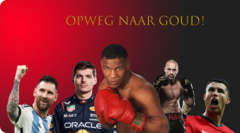

Afleveringen 1 - Ik had baliemang dromen
Over de disiplines, voetbal en het topsport.
Afleveringen 2 - Ringloos gaat de bal door het net
Bij deze aflevering gaan we het hebben over hoe je een profbasketballer kan
worden..
Afleveringen 3 - Glory of toch one fe, hoe maak je de keus?
In deze aflevering beantwoorden we de vraag: hoe bereik je topsport in
kickboksen?.
Afleveringen 4 - Vergeet niet te ontspannen
Bij deze aflevering praten we over hoe topsporters rusten en hoe belangrijk het
is.
Afleveringen 5 - Wat eten we vanavond
Bij deze aflevering hebben we het over het belang van de juiste voeding op weg
naar topsport.
Afleveringen 6 - dagelijkse leven van een topsporter
Over het dagelijkse leven van een topsporter. Wat is de juiste lifestyle? Wat
doe je in je vrijetijd?